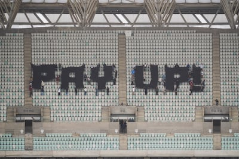

TL;DR: COP29 in Baku brings the usual mix of unmet goals, protests, and demands for more money, with affluent nations pressured to fund global climate efforts while accountability remains elusive. Are developed countries enabling dependence, or is real change possible?
I’m starting to get it. Or maybe I knew it all along but didn’t want to acknowledge it.
Based on the start of COP29 in Baku, Azerbaijan, the annual Keystone COP crew follows the time-tested axiom: “Whenever someone tells you ‘It's not about the money but about principle’, it's about the money.”
As the COP29 festival began, leaders from around the globe, including the US, the EU, and Brazil, sent proxies to Baku rather than sending the top guy. Azerbaijan isn’t on my travel bucket list, so I get it. It’s also true that an annual venting of grievances without discernable progress won’t be a productive use of time for senior leaders.
But it’s even worse than it seems. As The Associated Press reported:
The election of Donald Trump, who disputes climate change and its impact, and the collapse of the German governing coalition are altering climate negotiation dynamics here, experts said.
“The global north needs to be cutting emissions even faster … but instead we’ve got Trump, we’ve got a German government that just fell apart because part of it wanted to be even slightly ambitious (on climate action),” said Imperial College London climate scientist Friederike Otto. “We are very far off.”
Initially, Azerbaijan organizers hoped to have nations across the globe stop fighting during the negotiations. That didn’t happen as wars in Ukraine, Gaza and elsewhere continued.
Dozens of climate activists at the conference — many of them wearing Palestinian kaffiyehs — held up banners calling for climate justice and for nations to “stop fueling genocide.”
“It’s the same systems of oppression and discrimination that are putting people on the frontlines of climate change and putting people on the front lines of conflict in Palestine,” said Lise Masson, a protester from Friends of the Earth International. She slammed the United States, the U.K. and the EU for not spending more on climate finance while also supplying arms to Israel.
Mohammed Ursof, a climate activist from Gaza, called for the world to “get power back to the Indigenous, power back to the people.”
Jacob Johns, a Hopi and Akimel O’odham community organizer, came to the conference with hope for a better world.
“Within sight of the destruction lies the seed of creation,” he said at a panel about Indigenous people’s hopes for climate action. “We have to realize that we are not citizens of one nation, we are the Earth.” [Some links added—I like knowing more about who is being quoted]
So, we’ve got climate scientists bemoaning domestic politics, a wild concept of a global ceasefire on behalf of a festival, and an assortment of climate protesters who want developed countries to relinquish influence voluntarily. And these people want the rest of us to face reality?
This brings us to money. Since 2010, an effort has been ongoing to get OECD countries1 to commit $100 billion annually to the climate effort. This number was finally exceeded in 2024, with a tabulation of some $115.9 billion2. As an opening salvo, Mukhtar Babayev, the President of COP29, boldly bumped the number to $1.3 trillion, roughly ten times the pledge that’s taken 14 years to achieve (and 20 times the GDP of Azerbaijan, where he serves as Minister of Ecology and Natural Resources). Onun böyük testisləri var, deməliyəm. The countries he expected to pay for his aspirations weren’t thrilled, and it’s caused quite a stir.
In the meantime, the protestors are under the impression that they have leverage:

As a parent and part-time educator in America, I often reflect on how we strive to teach our children gratitude for their privileges and compassion for those less fortunate. On an international level, developed countries frequently play a similar role, acting as parents to developing nations. Yet, this dynamic feels unbalanced, as some countries, much like children who haven't learned independence, demand an increase in their allowance simply because they are young.
Compassion, when tied to financial aid, risks becoming a form of emotional extortion—pressuring "parent" nations to give without accountability, even when the "children" neglect to take responsibility for their growth and governance. In this vein, the protestors represent the parts of children (and occasionally parents) who resort to temper tantrums to demand attention and resources rather than accept responsibility and accountability.
The Organization for Economic Co-operation and Development (OECD) is a unique forum for the governments of 37 democracies with market-based economies to collaborate to develop policy standards to promote sustainable economic growth. See https://www.state.gov/the-organization-for-economic-co-operation-and-development-oecd/